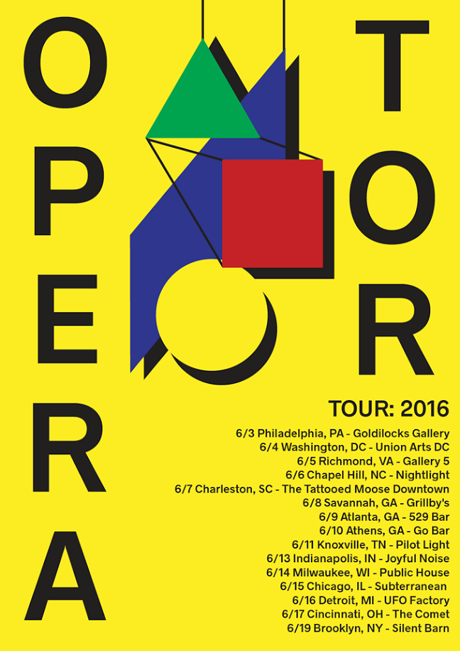
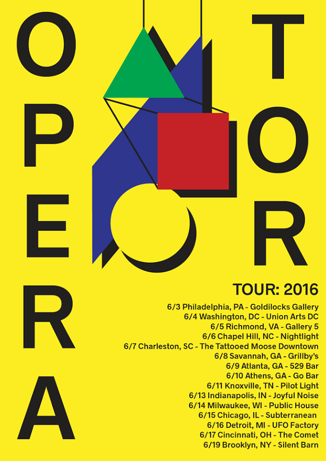

Warbling analogue synthesizers, driving motorik beats, waves of feedback noise.
Influences from krautrock to art pop to electronic minimalism. Not too serious. Not too silly.

operatormusicband@gmail.com
Warbling analogue synthesizers, driving motorik beats, waves of feedback noise.
Influences from krautrock to art pop to electronic minimalism. Not too serious. Not too silly.
